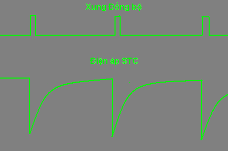
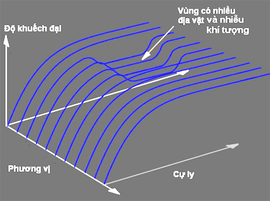
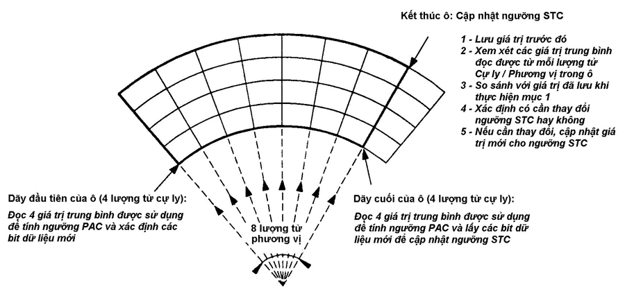
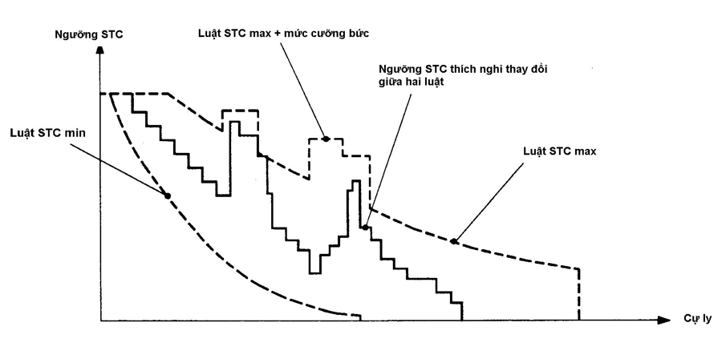

TRAC 2000 - GIỚI THIỆU CHUNG |
RADAR GIÁM SÁT SƠ CẤP PSR (PRIMARY SURVEILLANCE RADAR) |
| Công dụng và Tính năng (chi tiết ) Thành phần (chi tiết ) Sơ đồ khối tổng quát (chi tiết ) Nguyên lý đo cự ly (chi tiết ) Nguyên lý đo phương vị (chi tiết ) Khắc phục hiện tượng đo cự ly đa trị (chi tiết ) Giản đồ hướng của anten radar sơ cấp(chi tiết ) |
Nén xung (chi tiết ) Radar đa tần số (chi tiết ) Hiệu ứng Doppler (chi tiết ) Lọc mục tiêu di động (MTI) (chi tiết ) Lượng tử Cự ly và Phương vị (chi tiết ) Phát hiện mục tiêu (chi tiết ) Điều khiển thích nghi STC (chi tiết ) Xử lý tín hiệu radar sơ cấp (chi tiết ) |
| ĐIỀU KHIỂN THÍCH NGHI STC |
Phương pháp STC 
Điện áp STC còn có thể được lập trình để điều khiển thích nghi hệ số khuếch đại của tuyến thu vừa theo thời gian, vừa theo phương vị và cự ly nhằm hạn chế tác động của nhiễu địa vật và nhiễu khí tượng phù hợp với hiện trạng nhiễu thực tế ở quanh đài radar sơ cấp. |
Đây là phương pháp Tự động điều chỉnh hệ số khuếch đại theo thời gian (STC – Sensitivity Time Control). Điện áp điều khiển như trên hình vẽ được đưa tới lưới các tầng khuếch đại tín hiệu cao tần nhận được từ các cánh sóng cao và thấp trong tuyến cao tần thu của radar sơ cấp để điều khiển độ khuếch đại của chúng theo thời gian. Mức điện áp STC được chọn sao cho tín hiệu phản xạ từ các địa vật ở cự ly gần hay các đám nhiễu khí tượng thường có cường độ lớn không gây quá tải (bão hoà) cho Máy thu.
 |
Tính ngưỡng STC thích nghi Việc tính ngưỡng STC cũng sử dụng số liệu nhận được từ việc xử lý các giá trị trung bình của VMDA (mẫu biên độ cực đại của tín hiệu trong từng phần tử của ô cự ly / phương vị được xem xét) khi tính ngưỡng PAC. Giống như các giá trị trung bình này, ngưỡng STC được cập nhật từ vòng quét này đến vòng quét khác của anten.   |